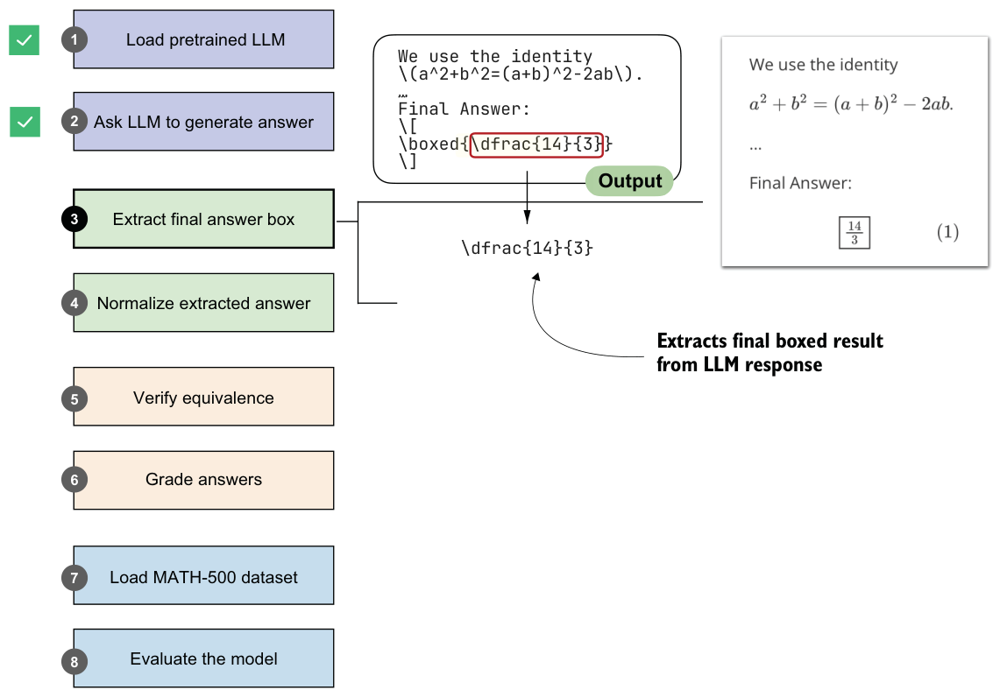

3.4Extracting the final answer box
Now that we have the model loaded and ready, we can get to the interesting part: evaluating the model.
It is worth recalling that this book takes a from-scratch approach, which naturally includes some detailed, sometimes tedious, steps. This is intentional. We want to build the evaluation pipeline ourselves so we can better understand how it works, rather than just calling predefined wrapper functions and building blocks.
In the previous section, you saw that the model returned the final answer in an answer box (written as r"\boxed{\dfrac{14}{3}}" in raw text). We did not enforce that format; the model likely produced it because boxed answers are a common convention in math benchmarks and training data. This behavior is not necessarily proof of overfitting to the evaluation tasks we’ll run later, but it reflects that pretrained models often encounter many problem formats online and learn to reproduce those stylistic conventions. As a general rule, it’s fair to assume that any information available on the internet when a model was trained was part of the training data.
Although it was not necessary here, when we later evaluate the model on the MATH-500 dataset, we will add a specific prompt instructing the model to return answers in this boxed form. (MATH-500 is a curated collection of 500 problems widely used as a benchmark dataset for reasoning models.) This step is straightforward, and it will reappear whenever we need to turn a model response into something that can be scored automatically at scale. This common convention makes evaluation more consistent across models and simplifies data extraction.
We will now write code that performs this extraction of the boxed answer content. This section implements step 3 in figure 3.6. (The next section will implement the normalization method for step 4.)

Because your model may produce slightly different responses than mine, depending on your hardware, the following code uses a hardcoded placeholder answer rather than generating a response with the model (but we’ll pretend that this answer was generated by the model). In later sections, we’ll revisit the model and have it generate answers for the tasks in the MATH-500 dataset:
model_answer = (
r"""... some explanation...
**Final Answer:**
\[\boxed{\dfrac{14}{3}}\]
""")Next, let’s define a function to extract the answer box from model_answer.
def get_last_boxed(text):
boxed_start_idx = text.rfind(r"\boxed")
if boxed_start_idx == -1:
return None
current_idx = boxed_start_idx + len(r"\boxed")
while current_idx < len(text) and text[current_idx].isspace():
current_idx += 1
if current_idx >= len(text) or text[current_idx] != "{":
return None
current_idx += 1
brace_depth = 1
content_start_idx = current_idx
while current_idx < len(text) and brace_depth > 0:
char = text[current_idx]
if char == "{":
brace_depth += 1
elif char == "}":
brace_depth -= 1
current_idx += 1
if brace_depth != 0:
return None
return text[content_start_idx:current_idx-1]The get_last_boxed helper utility function in listing 3.4 extracts the content of the last \boxed{...} expression from a model’s output. More specifically, it scans for the final \boxed, skips over whitespace, checks for braces, and handles any nesting so that it captures the intended answer string.
While it may look a bit tedious, having this parser in place will pay off when we run evaluations on datasets like MATH-500, where extracting the correct final answer is the first step toward measuring a model’s reasoning ability.
Now, let’s test this function on the model answer:
extracted_answer = get_last_boxed(model_answer)
print(extracted_answer)The output of this function call is "\dfrac{14}{3}", which is the boxed answer we wanted to extract.
Rendering math formulas
Latex class introduced earlier. Alternatively, for standalone math formulas without accompanying answer text, we can use the simpler Math class:from IPython.display import Math
display(Math(r"\dfrac{14}{3}"))The preceding get_last_boxed function correctly extracted the text, but we can make answer extraction a bit more robust with the extract_final_candidate function (shown in the following listing), which accounts for cases where a final answer box is missing or incomplete.
import re
RE_NUMBER = re.compile(
r"-?(?:\d+/\d+|\d+(?:\.\d+)?(?:[eE][+-]?\d+)?)"
)
def extract_final_candidate(text, fallback="number_then_full"): result = ""
if text:
boxed = get_last_boxed(text.strip()) if boxed:
result = boxed.strip().strip("$ ")
elif fallback in ("number_then_full", "number_only"):
m = RE_NUMBER.findall(text)
if m:
result = m[-1]
elif fallback == "number_then_full":
result = text
return resultThis extract_final_candidate function provides fallback settings in case no boxed answer is found, as follows:
"number_then_full"(the default): Pick the last simple number; otherwise, pick the whole text.
"number_only": Pick the last simple number; otherwise, return an empty string""."none": Extract only the boxed content; otherwise, return an empty string"".
For the fallback setting, the code in listing 3.5 uses regular expressions (regex for short) via Python’s re library. Regexes are a way to search for patterns in text. In our case, the regex pattern is designed to recognize numbers, including fractions, decimals, and scientific notation. While the regex syntax looks intimidating, you don’t need to worry about how it works here. What matters is that this gives us a reliable tool for extracting the last numeric candidate from the model’s output when no boxed answer is available.
Let’s try it on our model answer:
print(extract_final_candidate(model_answer))This correctly returns "\dfrac{14}{3}".
Now let’s try some additional examples. First, here’s another boxed candidate:
print(extract_final_candidate(r"\boxed{ 14/3. }"))This correctly returns "14/3.", stripping the extra whitespace but not the punctuation. The punctuation character will be handled correctly by the equality check we implement later.
Next, let’s try a candidate without a box, which should trigger the fallback setting:
print(extract_final_candidate("abc < > 14/3 abc"))Thanks to the default fallback setting, it will find the last number in the answer and correctly return "14/3".
In this section, we defined utility functions to extract the LLM’s answer from its response text. This brings us one step closer to our overall goal of verifying whether that answer is correct. In the next section, we’ll normalize the response into a more general, canonical form before implementing the checking functionality.